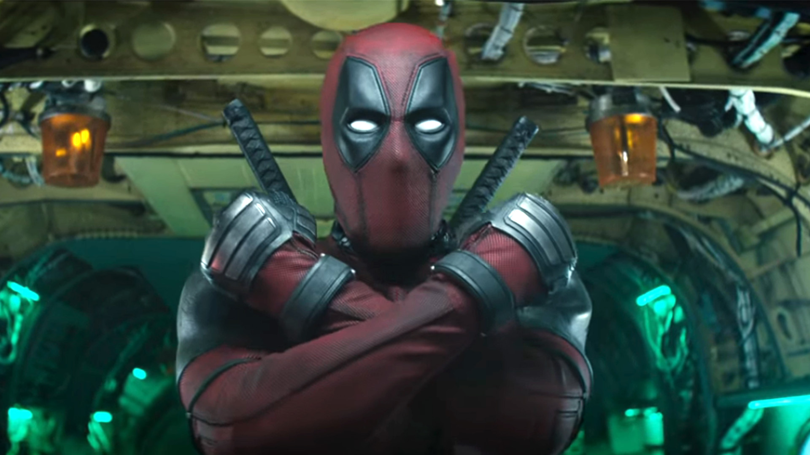

[Preview] Deadpool 2: Sẽ Tiếp Nối Được Thành Công Khủng Của Phần 1?
Thánh bựa Deadpool đã trở lại. Liệu lần này anh chàng có làm nên được kỳ tích như phần 1?
Năm 2016, sau khi ra mắt, Deadpool đã tạo nên cơn sốt khổng lồ trên thế giới. Chàng siêu anh hùng “bựa” không ai sánh bằng đã càn quét mọi phòng vé để rồi thành công “bỏ túi” hơn 700 triệu USD. Deadpool giờ đây là phim dán nhãn R có doanh thu cao nhất mọi thời đại.
Nội dung của phần 1 tập trung vào giải thích nguồn gốc đồng thời cũng là sự khởi đầu trên con đường làm siêu anh hùng của Deadpool. Wade Wilson vốn dĩ là một tay lính đánh thuê. Sau khi phát hiện mình bị bệnh ung thư, anh đã nhận lời tham gia vào một thí nghiệm bí mật với hy vọng có thể thoát khỏi tay tử thần (Ban đầu Wade Wilson bị lừa rằng đây là một thí nghiệm của Chính phủ nhưng thực ra do một tổ chức khác tiến hành). Thực sự sau đấy căn bệnh ung thư đã không còn là nỗi lo trong cuộc đời của Wade Wilson nữa, nhưng cũng từ đây vận mệnh của anh chàng đã hoàn toàn đổi thay.
Anh phát hiện bản thân được sở hữu những kỹ năng vô cùng kỳ diệu: dịch chuyển tức thời, tốc độ kinh người, cơ thể tự tái tạo, bất tử,… Nhưng cái gì cũng có hai mặt của nó, sau cuộc thí nghiệm, ngoại hình của Wade Wilson bị biến đổi và trở nên xấu xí kinh dị. Cũng chính vì thế mà anh quyết định vác súng đi tiêu diệt những kẻ đã xáo trộn cuộc đời mình và lấy biệt danh là “Deadpool”.

Nếu lời nói có thể làm vũ khí thì chắc chắn “nói nhiều, nói nhảm” là một thế mạnh tuyệt đối của Deadpool. Những phân đoạn anh chàng nhìn thẳng vào màn hình và lảm nhảm với chính khán giả, bất chấp đang trong trận chiến căng thẳng hay đang thân mật nóng bỏng với người yêu là điểm hài hước hàng đầu của bộ phim. Tuy nhiên, điều gì “quá” cũng không tốt. Đối với những khán giả giỏi tiếng Anh việc có thể nghe kịp lời thoại cũng có chút khó khăn, huống hồ là người xem phụ đề. Không những vậy, sử dụng quá nhiều yếu tố gây hài theo phong cách của văn hóa Mỹ với những khán giả “ngoại đạo” đôi khi bị phản tác dụng.
Yếu tố hành động trong Deadpool được xây dựng khá mạnh mẽ và quyết liệt, hoàn toàn khiến khán giả thỏa mãn, đặc biệt là các fan nguyên tác. Riêng với Ryan Reynolds, mặc dù phần lớn thời lượng trong phim nam diễn viên phải đeo mặt nạ nhưng Deadpool chắc chắn là vai diễn tốt nhất từ trước đến nay của anh. Ngôn ngữ cơ thể và đài từ đầy linh hoạt đi kèm với lời thoại hóm hỉnh đã giúp nam ngôi sao thể hiện thành công được chất tưng tửng đặc trưng của nhân vật.
Sau phần 1, đạo diễn David Leitch – người đứng sau thành công của siêu phẩm hành động John Wick sẽ thay thế đạo diễn Tim Miller để cầm trịch Deadpool 2 . Sự xuất hiện của David Leitch khiến người hâm mộ kỳ vọng rằng tính chất hành động trong phần mới của bộ phim hay này sẽ được nâng tần, kịch tính và hấp dẫn hơn.
Bên cạnh vị trí đạo diễn, dàn diễn viên của phim cũng có những sự bổ sung thú vị.
Nhân vật phản diện trong phần 2 chính là Cable do nam ngôi sao Jossh Brolin thể hiện. Cable là một kẻ đến từ tương lai nhằm thực hiện nhiệm vụ tiêu diệt một đứa bé – Người mà theo hắn sau này sẽ trở thành một dị nhân đầy quyền năng. Một điều khá hay ho đó là Jossh Brolin cũng đóng vai Thanos, kẻ hủy diệt hùng mạnh nhất thiên hà khiến các siêu anh hùng của Marvel phải khốn đốn. Đó là nguyên nhân vì sao trong trailer cuối cùng của Deadpool 2 mới tung ra cách đây không lâu, Deadpool lại “quen miệng” đá xoáy: “Đừng kỳ thị thế chứ, Thanos”.
Đối đầu với Cable, Deadpool không thể một mình độc chiến mà cần phải có sự giúp đỡ. Vì thế một đội quân có tên X-Force đã ra đời.
Dị nhân Domino do nữ ngôi sao Zazie Beetz đảm nhiệm. Nhân vật này cũng từng là một lính đánh thuê và là một “sản phẩm” sau một cuộc thí nghiệm bí mật như Deadpool. Chưa rõ khả năng thực sự của Domino là gì nhưng trong trailer, khi đến tham gia casting buổi tuyển chọn của Deadpool, bất chấp lời phủ nhận của “ban giám khảo”, cô nàng vẫn cho rằng “may mắn” là một loại siêu năng lực. Thực tế, bất kỳ siêu anh hùng nào, dù có tài giỏi đến bao nhiêu thì vẫn phải cần đến may mắn đấy chứ!
Ngoài Domino còn có một số gương mặt mới khác như: Bedlam – nhân vật theo trong truyện tranh có khả năng tạo ra từ trường điện từ phá hủy bất kỳ thiết bị công nghệ nào. Với hai thanh kiếm kim loại, Shatterstar trở thành chiến binh có khả năng chiến đấu mạnh mẽ khiến ai cũng phải kiêng dè. Surge – cô gái có khả năng hấp thụ và giải phóng điện…
Kẻ ác mạnh hơn và hệ thông nhân vật được mở rộng hơn, liệu trận chiến lần này của Deadpool sẽ khiến người xem hài lòng?
Deadpool 2 có khắc phục được những khuyết điểm đồng thời tiếp nối thành công của phần 1? Nhiệm vụ này xem chừng càng khó khăn hơn khi phim ra mắt ngay sau bom tấn siêu anh hùng Avengers: Infinity War. Hãy cùng đón xem màn thể hiện của Deadpool và đồng bọn vào ngày 18.05.2018 sắp tới nhé!